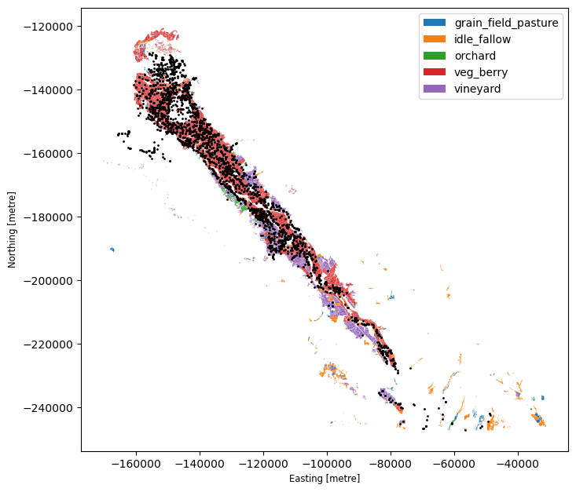
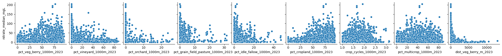
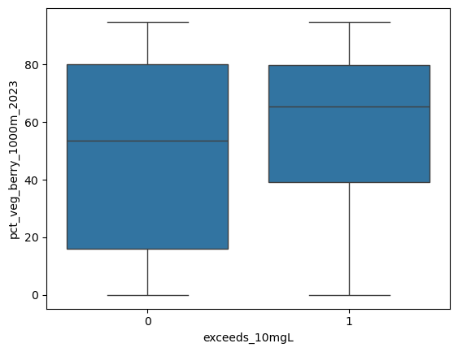
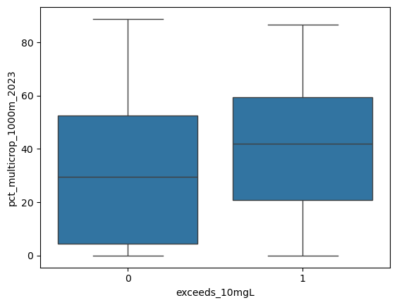

import zipfileimport numpy as npimport pandas as pdimport geopandas as gpdimport matplotlib.pyplot as pltimport seaborn as snsimport missingno as msnofrom pathlib import Pathfrom scipy.stats import zscorefrom sklearn.ensemble import IsolationForestfrom statsmodels.graphics.tsaplots import plot_acf, plot_pacfimport sys# Find the project root and import the shared paths (also applies the projection setting in src/__init__.py)ROOT =next(p for p in [Path.cwd(), *Path.cwd().parents] if (p /"src").is_dir())sys.path.insert(0, str(ROOT))from src import pathsCROP_DIR = paths.CROP_MAPPING_DIR # inputs and outputs of the original 2023 crop analysis
Code
# one row per well with the target var (nitrate)wells = pd.read_csv(CROP_DIR /"wells_nitrate.csv")
Code
wells.head()
well_id
latitude
longitude
x_m
y_m
nitrate_median_mgL
exceeds_10mgL
well_depth_ft
0
01050601
36.828356
-121.676089
-149284.4
-130741.2
15.9
1
NaN
1
AGC100000001-CCGC_0056
36.518767
-121.477083
-132097.1
-165440.3
10.8
1
NaN
2
AGC100000001-CCGC_0365
36.742640
-121.627650
-145134.0
-140342.1
15.0
1
NaN
3
AGC100000001-CCGC_0387
35.879840
-120.887830
-80066.4
-237091.5
8.4
0
NaN
4
AGC100000001-CCGC_0533
36.678410
-121.734550
-154795.6
-147310.6
3.8
0
NaN
Code
target ="nitrate_median_mgL"# median nitrate since 2015over ="exceeds_10mgL"# 1 if the median is over the 10 mg/L drinking water limitfig_dir = CROP_DIR /"figures"fig_dir.mkdir(parents=True, exist_ok=True)
0. Crop features for each well
Code
features_file = CROP_DIR /"well_crop_features_all.csv"# Only used if well_crop_features_all.csv is missing: the rebuild below reads zipped DWR maps# (1997–2023, from data.cnra.ca.gov) from a crop_maps/ folder next to this notebook# year: (zip file, column with the crop letter, column with the county name)files = {1997: ("i15_landuse_monterey1997.zip", "CLASS1", None), # already Monterey only2014: ("i15_crop_mapping_2014_gdb.zip", "DWR_Standard_Legend", "County"),2016: ("i15_crop_mapping_2016_gdb.zip", "Symb_class", "County"),2018: ("i15_crop_mapping_2018_gdb.zip", "SYMB_CLASS", "COUNTY"),2020: ("i15_crop_mapping_2020_gdb.zip", "SYMB_CLASS", "COUNTY"),2022: ("i15_crop_mapping_2022_gdb.zip", "SYMB_CLASS", "COUNTY"),2023: ("i15_crop_mapping_2023_final.gdb.zip", "SYMB_CLASS", "COUNTY"),}# DWR land use letter -> our crop groupletter_to_group = {"T": "veg_berry","V": "vineyard","D": "orchard", "C": "orchard", "Y": "orchard", "YP": "orchard","G": "grain_field_pasture", "F": "grain_field_pasture", "P": "grain_field_pasture", "R": "grain_field_pasture","I": "idle_fallow", "X": "idle_fallow",}farmed_groups = ["veg_berry", "vineyard", "orchard", "grain_field_pasture"]# MULTIUSE letter -> crops grown per yearcrops_per_year = {"S": 1, "D": 2, "T": 3, "Q": 4}
Summary of features tested:
pct_(some crop)(some radius) 1. pct_veg_berry…: veggies, berries, etc. 2. pct_vineyard_…: vineyards 3. pct_orchard_…: fruit/nut trees, citrus, avocado, etc. 4. pct_grain_field_pasture_…: grain, hay, etc. 5. pct_idle_fallow_…: idle or fallow fields 6. pct_urban_…: towns (only mapped in 1997) 7. pct_cropland_…: all farmed land added up 8. pct_multicrop_…: land planted 2+ times a year 9. crop_cycles_…: crops planted per year on nearby farmland 10. dist_veg_berry_m_2023: distance to the nearest veggie field
Radius is 1000 m for every year (1997 to 2023), and 500 m for 2023.
Code
ifnot features_file.exists(): wells_gdf = gpd.GeoDataFrame(wells[["well_id"]], geometry=gpd.points_from_xy(wells["x_m"], wells["y_m"]), crs=3310)print(wells_gdf.head()) results = []for year, (zip_name, code_col, county_col) in files.items():print("working on", year) zip_path ="crop_maps/"+ zip_name names = zipfile.ZipFile(zip_path).namelist() gdb = [n.split(".gdb")[0] +".gdb"for n in names if".gdb"in n] shp = [n for n in names if n.endswith(".shp")] map_path ="/vsizip/"+ zip_path +"/"+ (gdb[0] if gdb else shp[0])if county_col isNone: m = gpd.read_file(map_path, engine="pyogrio")else: m = gpd.read_file(map_path, where=f"{county_col} = 'Monterey'", engine="pyogrio") letters = m[code_col].astype(str).str.split("|").str[0].str.strip().str.upper() m["group"] = letters.map(letter_to_group).fillna("other") m.loc[letters.str.startswith("U"), "group"] ="urban"# crops per year is only mapped from 2018 onif year >=2018: m["cycles"] = m["MULTIUSE"].map(crops_per_year).fillna(1)else: m["cycles"] =-1 m["geometry"] = m.geometry.force_2d() m = m.to_crs(3310) m["geometry"] = m.geometry.buffer(0) m = m.dissolve(by=["group", "cycles"]).reset_index()# 500 and 1000 meter radius around the wellsfor radius in ([500, 1000] if year ==2023else [1000]):# cut the crop shapes with a circle around each well, as % of the circle circles = wells_gdf.copy() circles["geometry"] = wells_gdf.buffer(radius) pieces = gpd.overlay(circles, m, how="intersection", keep_geom_type=True) pieces["pct"] = pieces.geometry.area / (np.pi * radius **2) *100# add up per well and group table = pieces.pivot_table(index="well_id", columns="group", values="pct", aggfunc="sum") table = table.reindex(index=wells["well_id"], columns=farmed_groups + ["idle_fallow", "urban"]).fillna(0) table["cropland"] = table[farmed_groups].sum(axis=1)# crops per year (area weighted) and % multi-croppedif year >=2018: crop = pieces[pieces["group"].isin(farmed_groups)] table["crop_cycles"] = (crop["pct"] * crop["cycles"]).groupby(crop["well_id"]).sum() / crop.groupby("well_id")["pct"].sum() table["multicrop"] = crop[crop["cycles"] >=2].groupby("well_id")["pct"].sum() table["multicrop"] = table["multicrop"].fillna(0)# names like pct_veg_berry_1000m_2023 and crop_cycles_1000m_2023 new_names = []for col in table.columns:if col =="crop_cycles": new_names.append(f"crop_cycles_{radius}m_{year}")else: new_names.append(f"pct_{col}_{radius}m_{year}") table.columns = new_names results.append(table)# distance from each well to the nearest vegetable/berry field veg_fields = m[m["group"] =="veg_berry"][["geometry"]].explode(index_parts=False) nearest = gpd.sjoin_nearest(wells_gdf, veg_fields, distance_col="dist_veg_berry_m_2023") results.append(nearest.groupby("well_id")["dist_veg_berry_m_2023"].min()) features = pd.concat(results, axis=1).round(3) features.index.name ="well_id" features.reset_index().to_csv(features_file, index=False)crops = pd.read_csv(features_file) # 67 crop features per welldf = wells.merge(crops, on="well_id")print(df.shape)
# map of the 2023 cropsmap_path = paths.RAW_CROPS /"i15_Crop_Mapping_2023_Final.gdb"crop_map = gpd.read_file(map_path, where="COUNTY = 'Monterey'")crop_map["group"] = crop_map["SYMB_CLASS"].str.strip().map(letter_to_group).fillna("other")# coordinate transformation for mapcrop_map = crop_map.to_crs(3310)fig, ax = plt.subplots(figsize=(8, 10))crop_map.plot(ax=ax, column="group", legend=True, cmap="tab10")# Plotting the wells over the cropsax.scatter(wells["x_m"], wells["y_m"], s=1, color="black")plt.savefig(fig_dir /"map_crops_2023.png")plt.show()
/home/ctomas/miniconda3/envs/fall_2026_environmental_infrastructure/lib/python3.12/site-packages/pyogrio/raw.py:198: UserWarning: Measured (M) geometry types are not supported. Original type 'Measured 3D MultiPolygon' is converted to 'MultiPolygon Z'
return ogr_read(
/home/ctomas/miniconda3/envs/fall_2026_environmental_infrastructure/lib/python3.12/site-packages/pyogrio/raw.py:198: RuntimeWarning: organizePolygons() received a polygon with more than 100 parts. The processing may be really slow. You can skip the processing by setting METHOD=SKIP, or only make it analyze counter-clock wise parts by setting METHOD=ONLY_CCW if you can assume that the outline of holes is counter-clock wise defined
return ogr_read(

Code
features_2023 = [c for c in crops.columns if c.endswith("1000m_2023") and"urban"notin c] + ["dist_veg_berry_m_2023"]cols = features_2023 + [target]stats = df[cols].describe().Tstats["% zero"] = (df[cols] ==0).mean() *100stats["% missing"] = df[cols].isna().mean() *100stats["corr with target"] = df[cols].corrwith(df[target], method="spearman")stats.round(2)
# scatter of the target against each featuresns.pairplot(df, x_vars=features_2023, y_vars=[target])plt.savefig(fig_dir /"target_vs_features.png")plt.show()

Code
# veg berry for wells under (0) vs over (1) the limitsns.boxplot(data=df, x=over, y="pct_veg_berry_1000m_2023")plt.savefig(fig_dir /"boxplot_veg_berry.png")plt.show()

Code
# multi-cropping for wells under (0) vs over (1) the limitsns.boxplot(data=df, x=over, y="pct_multicrop_1000m_2023")plt.savefig(fig_dir /"boxplot_multicrop.png")plt.show()

2. Missing Data
Code
# only crop_cycles: wells with no cropland nearby have no crops to countprint((df[features_2023].isna().mean() *100).round(1))print("wells with no cropland within 1 km:", (df["pct_cropland_1000m_2023"] ==0).sum())msno.matrix(df[["well_depth_ft"] + features_2023])plt.savefig(fig_dir /"missingness.png")plt.show()
pct_veg_berry_1000m_2023 0.0
pct_vineyard_1000m_2023 0.0
pct_orchard_1000m_2023 0.0
pct_grain_field_pasture_1000m_2023 0.0
pct_idle_fallow_1000m_2023 0.0
pct_cropland_1000m_2023 0.0
crop_cycles_1000m_2023 5.4
pct_multicrop_1000m_2023 0.0
dist_veg_berry_m_2023 0.0
dtype: float64
wells with no cropland within 1 km: 163
Does an older crop map relate to today’s nitrate better than the 2023 map?
Code
years = [1997, 2014, 2016, 2018, 2020, 2022, 2023]lag = pd.DataFrame(index=years)lag["corr with 2023 map"] = [df[f"pct_veg_berry_1000m_{y}"].corr(df["pct_veg_berry_1000m_2023"], method="spearman") for y in years]lag["corr with nitrate"] = [df[f"pct_veg_berry_1000m_{y}"].corr(df[target], method="spearman") for y in years]lag.plot(marker="o")plt.savefig(fig_dir /"crop_history_lag.png")plt.show()print(lag)
# lag-target scatter plot vegetables in 1997 vs nitrate todayplt.scatter(df["pct_veg_berry_1000m_1997"], df[target], s=3)plt.xlabel("percent vegetables/berries within 1 km in 1997")plt.ylabel(target)plt.savefig(fig_dir /"lag_scatter_1997.png")plt.show()